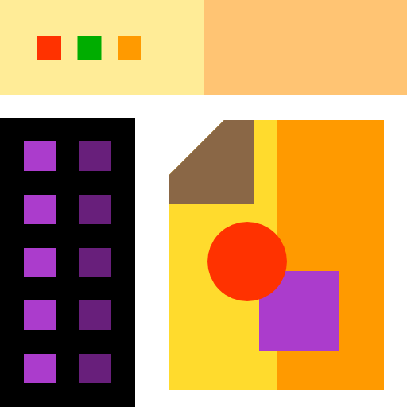
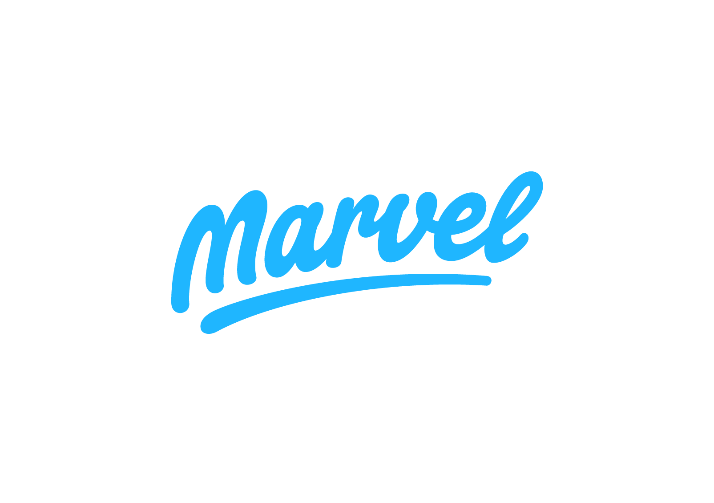
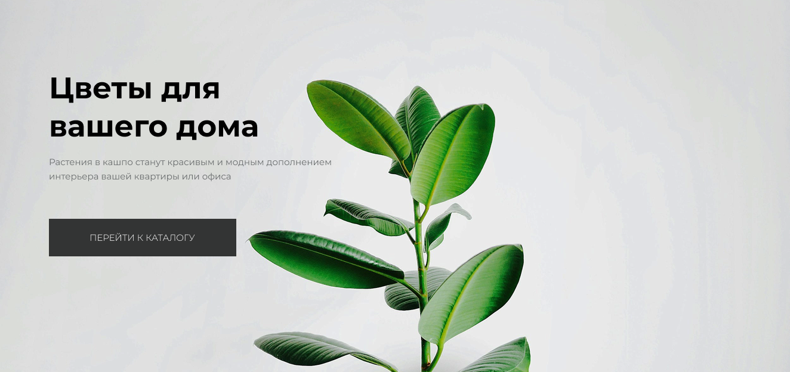
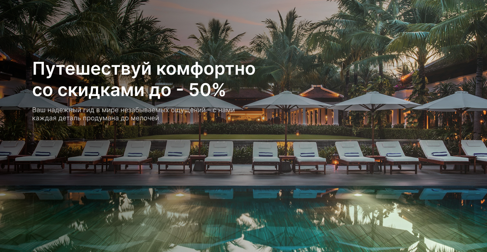
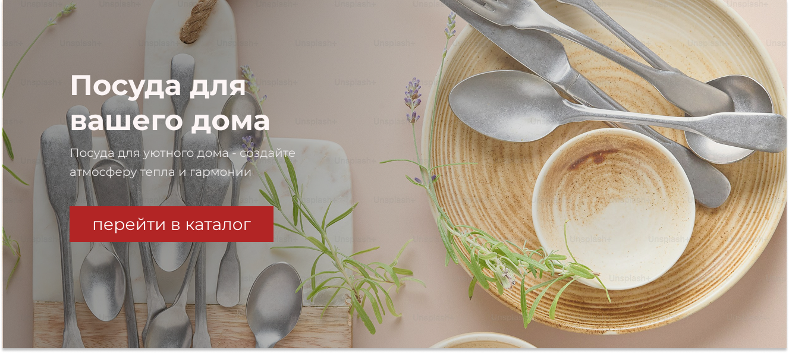

Обо мне
Я начинающий дизайнер, который любит учиться новому и создавать решения, которые делают жизнь пользователей проще. Моя цель — делать интерфейсы, которые нравятся людям и решают задачи бизнеса.
Особое внимание уделяю изучению принципов UI/UX, работе с современными инструментами прототипирования и макетирования, таким как Figma, Penpot и другие. Постоянно совершенствую свои навыки, чтобы создавать не только красивые, но и функциональные, удобные в использовании продукты.
Особое внимание уделяю изучению принципов UI/UX, работе с современными инструментами прототипирования и макетирования, таким как Figma, Penpot и другие. Постоянно совершенствую свои навыки, чтобы создавать не только красивые, но и функциональные, удобные в использовании продукты.
Навыки и инструменты
Прототипирование и макетирование
Figma
Penpot
Adobe XD
Sketch

Figma Prototype
ProtoPie

Marvel App
Графические редакторы
Photoshop
Illustrator
Конструкторы сайтов
Tilda
Webflow
Портфолио

Дизайн интернет-магазина комнатных растений
Комплексная разработка UI/UX для онлайн-платформы, специализирующейся на продаже комнатных растений.
Посмотреть

Дизайн сервиса бронирования отелей
Разработка UI/UX для онлайн-платформы, специализирующейся на бронировании отелей
Посмотреть

Тестовое задание: HomeTaste
Разработка UI/UX для онлайн-платформы, специализирующейся на продаже посуды для дома (тестовое задание)
ПосмотретьКонтакты
На связи! 💌
Мой почтовый ящик всегда открыт для ваших вопросов, предложений или просто дружеского привета. Давайте пообщаемся!
Написать мне 👋